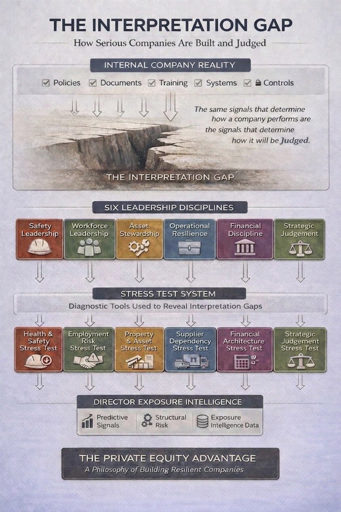

Internal Experience
Inside the organisation everything usually feels coherent. Policies exist, training occurs, systems operate, documents accumulate.
The gap between internal narrative and external evaluation is where value destruction, personal liability, and strategic error concentrate. Closing that gap is not a nice to have — it is the basis of good governance and is The Private Equity Advantage.
Private equity investors do not experience a company from the inside. They build a model of it from the outside in — structured, current, and free from the accumulated assumptions that shape how leadership sees its own organisation.
Leadership teams build their understanding gradually. Over years, through daily operations, inherited decisions, and familiar narratives. The result is a view that feels complete but carries blind spots — historical bias, excessive detail, and a market perspective shaped more by proximity than evidence.
Private equity strips those distortions away. It reconstructs the company as it exists today, using the same signals that regulators, courts, insurers, and investors will eventually use. The result is a more accurate picture of the business — one that reveals both the opportunities and the exposures that insiders rarely see.
That reconstruction capability is The Private Equity Advantage. And the Stress Tests make it available as a structured diagnostic — without a transaction, without a mandate, and without waiting for scrutiny to arrive.
That outside-in reconstruction reveals something consistent. There is always a gap between how leadership experiences the organisation and how outsiders interpret it. We call it the Interpretation Gap.
Inside the organisation everything usually feels coherent. Policies exist, training occurs, systems operate, documents accumulate.
Outsiders reconstruct the organisation from fragments — board minutes, incident records, escalation pathways, risk registers, financial patterns.
The distance between how leadership experiences the organisation and how the outside world interprets its signals. That gap determines both performance and judgement.

Every serious problem that hits an operational company can eventually be traced back to one of six leadership disciplines. When they are strong, organisations absorb shocks and remain resilient. When they weaken, the Interpretation Gap widens.
Leadership signals shape two things simultaneously. They shape how the company performs. And they shape how the company will be judged when scrutiny arrives.
How leadership oversees physical risk — not merely through policies or compliance systems, but through the signals that demonstrate oversight, escalation, and responsibility.
Weak safety signals create operational failures and regulatory exposure simultaneously.
How employment structures, culture and obligations are managed. The handling of workplace issues often reveals deeper leadership signals.
Employment discipline shapes both workforce performance and legal resilience.
How property, equipment and infrastructure are protected and maintained. Maintenance decisions, investment priorities, and oversight patterns shape how organisations appear under investigation.
Poor asset stewardship leads to reliability problems and environmental liability.
How operational systems respond to disruption, dependency and stress. Supplier concentration, logistics vulnerabilities, and system fragility often remain invisible until disruption occurs.
Resilient operations absorb shocks. Fragile ones amplify them.
How organisations structure liquidity, leverage, and capital allocation. Financial stress frequently exposes earlier judgement patterns.
Undisciplined financial decisions create stress and governance criticism long before a crisis.
How leadership makes major decisions. Expansions, acquisitions, and partnerships are rarely judged only by outcomes. They are judged by the quality of judgement exercised at the time.
Undisciplined strategic decisions create financial stress and governance criticism.
Each Stress Test examines one leadership discipline. Not as a compliance exercise. But as an interpretation exercise.
The signals that determine performance are often the same signals that determine judgement.
How your safety governance reads under regulatory scrutiny following a serious workplace event.
Most directors only discover how their decisions look after something goes wrong. The Stress Test reveals that story before the incident writes it.
How employment structures, culture and obligations are managed — and what workplace issues reveal about deeper leadership signals.
The handling of workplace issues often reveals deeper leadership signals.
How property, equipment and infrastructure are protected and maintained under scrutiny.
Maintenance decisions, investment priorities, and oversight patterns shape how organisations appear under investigation.
How operational systems respond to disruption, dependency and stress.
Supplier concentration, logistics vulnerabilities, and system fragility often remain invisible until disruption occurs.
How organisations structure liquidity, leverage, and capital allocation under hostile review.
Financial stress frequently exposes earlier judgement patterns.
Whether major decisions — expansions, acquisitions, partnerships — survive retrospective interpretation.
Decisions are rarely judged only by outcomes. They are judged by the quality of judgement exercised at the time.
Every major corporate event eventually ends up in a room where outsiders reconstruct what leadership did and why.
At that moment the company is no longer judged by how the organisation felt internally. It is judged by how its decisions appear when someone else tells the story.
Operational companies rarely encounter serious problems because of a single mistake.
When serious problems develop, the story almost always traces back to one of six leadership disciplines. Not because the leaders were reckless. But because organisations drift.
Each Stress Test is a finite interpretive exercise examining one leadership discipline.
The objective is not to improve the system. The objective is to reveal how the organisation's signals would likely be interpreted when outsiders reconstruct the company following a serious event.
And once you see that gap, you can't unsee it.
The Private Equity Advantage applies the analytical lens of private equity — reconstructing how an organisation reads from the outside in — to the leadership signals that determine both performance and judgement under scrutiny.
Serious companies are not judged by the systems they believe they have. They are judged by the story their decisions tell under scrutiny. That story is assembled from signals distributed across the organisation — signals that most leadership teams never examine from the outside in.
Some leadership teams learn to see these signals earlier than others. Not because they are better at compliance. But because they examine organisations through a different lens. Instead of asking "Do the systems exist?" they ask "How does this organisation actually behave when decisions are made?"
Each Stress Test reconstructs how the organisation's signals would appear under scrutiny. The objective is not to criticise. The objective is to reveal. Because clarity is the beginning of resilience.
TPEA was founded by Kory Fagan — a private equity investor and operator with more than 25 years in the New Zealand mid-market, including as a founding partner of NZ Equity Partners. Across that period, one pattern recurred: enterprise risk accumulates quietly long before it is recognised formally, and the signals that determine how an organisation is judged under scrutiny are often the same signals that quietly determined its trajectory long before anything went wrong.
His work centres on capital allocation, governance architecture, and downside underwriting — the mechanics that determine durability before growth narratives are written.
TPEA does not provide consulting. It does not run remediation programs. It does not build implementation plans. Each Stress Test is a finite interpretive exercise — it reveals how the organisation reads under scrutiny. No advisory extension. No remediation. No implementation.